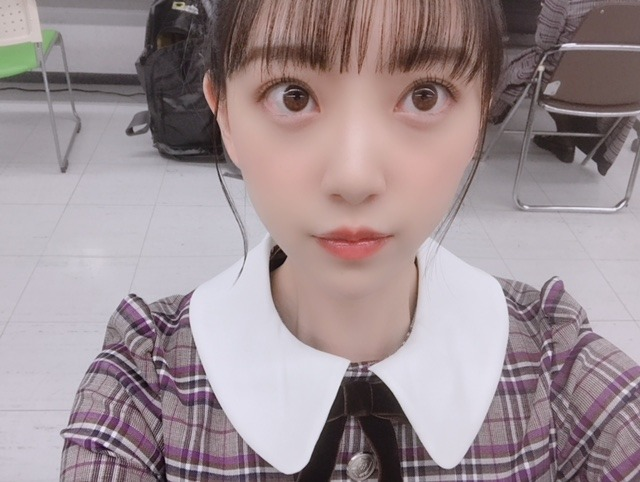

2018/1109Frigirls_blog_♡
ホットギミックで本格的に少女漫画に
はまりまして、最近は
恋するレイジーを読み始めました
おすすめがあれば教えてください☺︎

リクエストをいただいていた
女の子向けブログ。
お待たせしました☺︎
ありがたいことに
握手会にたくさんの女の子が来てくれて
いろんな質問をしてくれるのですが
詳しく答えることができなかったのが
いくつかあったので...
ブログにて失礼します☺︎
好きなブランド・洋服
あまりここ！とは決めずに
ぶらぶらして買っていますが
SNIDEL FURFUR sisterjane
ZARA Rosarymoon UNIQLOはよく着ます
海外に行った時に古着屋さんとか
セレクトショップで大量買いしてしまうので
そういうのも多いかな
ハイブランドは
SAINTLAURENT
j&m Davidson
が好きです

パーカーも好きでよく買います☺︎
これはQALBの！
数年前から
キャップやキャスケット
ベレー帽などのいろんな帽子と
サングラスを集めるのが趣味です
サングラスは空港でも買うし路面店でも
いいのを見つけたら買ってしまいます
かれこれ、10個以上はあるかなー。

ロングの茶髪はいつかしてみたい髪型の1つ☺︎
アッシュ系の髪色にもしてみたいです
ベリーショートも興味あるし...
生きているうちに
いろんな自分に出会いたいです
スキンケア・コスメ
そのときの肌の調子やマイブームで
変えていて、いまの化粧水乳液は
Celvokeを です
product SKII HAKU もお気に入り
未央奈の毎日メイク
#ベースメイク
下地...プリマヴィスタ
ファンデーション...江原道マイファンスィーアクアファンデーション012
コンシーラー...IPSAクリエイティブコンシーラー
パウダー...THREEアルティメイトダイアフェネスルースパウダー(カラーレス)01
チーク...クリニーク(ラベンダー)
#アイメイク
シャドウ...SUQQUデザイニングカラーアイズ04絢撫子
最近はずっとこれの右下と右上の色を混ぜて二重幅に塗っています
涙袋にはオンリーミネラルミネラルピグメントSM01フロスティピンクとキャンメイク ジュエリーシャドウベール03をぽんぽんと載せます
アイライン...kパレットDB 24wp
マスカラ...ヒロインメイク アドバンストフィルム02
基本アイラインとマスカラは茶色で
ナチュラルにボリュームアップします
#リップ
保湿...ミンティットローズリップバーム
色もつくし保湿がかなりされます
口紅...SUQQUモイスチャーリッチリップスティックシリーズはお気に入り
グロス...クラランスのリップオイル02とLusciouslipsの321とクルドポーボーテのブリアンアレーブルエクラ7
をよく使います
クラランスのリップオイルは定番に潤うので
何色かもってます〜
グロスや口紅は大好きなので色々集めてしまいます
#他
ハイライト...THREEシマリンググローデュオ01
これは鼻筋と涙袋に歌番組やライブの時は
必ずいれます
自然だけど全然違うし私のメイクでは欠かせません
涙袋整形した？って言われました。笑
整形はしてません。笑
こんなかんじかな？

季節やブームでコロコロ
メイクも変えているのでちょくちょく
載せますね♡
ちなみに好きな香水はmiumiuシリーズと
ジョーマローンシリーズです☺︎
あと、shiroのヘアミスト、ボディクリームも
愛用しています
ではmステ
行ってきます！！

2018/11/09 19:36
コメント(413)
未央奈！ブログ更新ありがとう〜
女性の方向けのブログも更新してくれるなんて。
マメだね〜
Mステ見ました！
最高に輝いてましたよ！！！
またの更新待ってます〜
女性の方向けのブログも更新してくれるなんて。
マメだね〜
Mステ見ました！
最高に輝いてましたよ！！！
またの更新待ってます〜
女子向けブログありがとうー！
みおなみたいに上手にメイクできるようになりたいなぁ…
Mステよかったよー！
みおなみたいに上手にメイクできるようになりたいなぁ…
Mステよかったよー！
1/100000っていう漫画おすすめ~。
すっごく泣けます。。。
すっごく泣けます。。。
ハチミツにはつこいちょーーオススメ✨
読んでみて感想教えて！！！
読んでみて感想教えて！！！
堀ちゃん
Mステお疲れ様でした
さっき録画したの観ました
今回の新曲もいい曲でした
シンクロニシティは春で自己チューで行こう！は夏で今回は冬っぽい曲ですね
ほんのちょっとしか写らなかったけどしっかり堀ちゃんを見つける事が出来ました（一瞬で次々と変わる画面の中から見つけるのは難しいです笑）
来週の発売も楽しみしてます
メイクの知識はゼロに等しいですが、女の人は大変そうなのは伝わります（男は清潔感のある服装と髪型を気をつけていればとりあえずは大丈夫なので）
それしか言えませんがメイク頑張って下さい（このコメントをたまたま見ている女性の方も）
堀ちゃんはパーカー、自分はスーパーロング丈のコートを今年の冬着ようと思います
ありがとうございました
Mステお疲れ様でした
さっき録画したの観ました
今回の新曲もいい曲でした
シンクロニシティは春で自己チューで行こう！は夏で今回は冬っぽい曲ですね
ほんのちょっとしか写らなかったけどしっかり堀ちゃんを見つける事が出来ました（一瞬で次々と変わる画面の中から見つけるのは難しいです笑）
来週の発売も楽しみしてます
メイクの知識はゼロに等しいですが、女の人は大変そうなのは伝わります（男は清潔感のある服装と髪型を気をつけていればとりあえずは大丈夫なので）
それしか言えませんがメイク頑張って下さい（このコメントをたまたま見ている女性の方も）
堀ちゃんはパーカー、自分はスーパーロング丈のコートを今年の冬着ようと思います
ありがとうございました
Mステすごい可愛かった！！！
女の子のブログ、すごいありがたいです！
真似させていただきます！笑
大好き！！
女の子のブログ、すごいありがたいです！
真似させていただきます！笑
大好き！！
未央奈ちゃん
mステ お疲れ様です
可愛い
いつも本当に可愛いですね
癒されます
女の子ブログ ありがとう！
色々と参考にさせていただきます
知ることが出来て とても嬉しいです
次の握手会に行けるのが1月で
ものすごく待ち遠しい‥
風邪引かないように 気を付けてね
いつも元気になれるパワーを ありがとう
未央奈ちゃん 応援しています
mステ お疲れ様です
可愛い
いつも本当に可愛いですね
癒されます
女の子ブログ ありがとう！
色々と参考にさせていただきます
知ることが出来て とても嬉しいです
次の握手会に行けるのが1月で
ものすごく待ち遠しい‥
風邪引かないように 気を付けてね
いつも元気になれるパワーを ありがとう
未央奈ちゃん 応援しています
女の子向けブログ嬉しいです！ありがと～～❣️参考にします～～
少女漫画は「ラブ☆コン」がおすすめです～～あとモデルさんのお話の「悩殺ジャンキー」も面白いです
少女漫画は「ラブ☆コン」がおすすめです～～あとモデルさんのお話の「悩殺ジャンキー」も面白いです
未央奈〜こんばんは〜 遅くにごめんなさい〜
遅くにごめんなさい〜
 Mステ観たよ〜
Mステ観たよ〜 安定の可愛いさに見惚れちゃいました〜
安定の可愛いさに見惚れちゃいました〜
 スキンケア含めメイクやファッションなど早速真似出来るところから始めたいと思いま〜す
スキンケア含めメイクやファッションなど早速真似出来るところから始めたいと思いま〜す 本当にありがとう〜涙袋整形したって言われたんだね
本当にありがとう〜涙袋整形したって言われたんだね
 昔から知ってるけど未央奈はずっと変わらず可愛いんだけど何でだろうね
昔から知ってるけど未央奈はずっと変わらず可愛いんだけど何でだろうね 今日も身体に気を付けて一日頑張ってね〜
今日も身体に気を付けて一日頑張ってね〜 応援してるからね〜大好きだよ〜未央奈〜
応援してるからね〜大好きだよ〜未央奈〜
 お休みなさい〜
お休みなさい〜

みおなちゃんブログ更新ありがとう～！最近メイクやりたいんだけど何から揃えたりすれば良いかわからないから助かります！（；_；）少女漫画でおすすめは思い思われふりふられがオススメだよ！！
未央奈メイク！念願！！
真似します、、、
真似します、、、
更新ありがとうございます！
私は男なのですが。髪の毛の話すごく共感できます！
ずっと前からアフロにしたくて、でも伸ばし途中で断念しちゃいます。
私は男なのですが。髪の毛の話すごく共感できます！
ずっと前からアフロにしたくて、でも伸ばし途中で断念しちゃいます。
こんばんは。ブログ更新ありがとうございます。
私はあまり少女漫画は読みませんですが、友達に勧められたのは「はいからさんが通る」ですね。新作アニメが公開されるそうなので、ぜひ見に行きたいです。あとアニメ化された少女漫画で好きなのは、夏目友人帳ですね。心に響くエピソードがいっぱいです。
ではまた。
私はあまり少女漫画は読みませんですが、友達に勧められたのは「はいからさんが通る」ですね。新作アニメが公開されるそうなので、ぜひ見に行きたいです。あとアニメ化された少女漫画で好きなのは、夏目友人帳ですね。心に響くエピソードがいっぱいです。
ではまた。
未央奈ちゃんブログ更新ありがとう！
今度、男向けブログもやってほしいです！
Mステ見たけど、感動した…
これからも頑張ってください！
今度、男向けブログもやってほしいです！
Mステ見たけど、感動した…
これからも頑張ってください！
未央奈～ こんにちは
ブログ更新ありがとうございます。
さすがに前半の部分は、私たちにはわかりませんが、女の子向けに書いている部分は、それはそれで生き生きとしていますね。
さて、「Mステ」おつかれさまでした。久しぶりの歌番組生放送、やっぱり未央奈がいてくれて、安心ですね。
なーちゃんと若さまの笑顔もしっかり見届けましたよ。
いよいよ来週は、新曲発売ですね。レコメンも楽しそうですし、待ち遠しい限りです。
もちろんこの曲も大ヒット、お祈りしております。
季節は一気に進んでいます。体調管理にはくれぐれも気をつけてくださいね。
ブログ更新ありがとうございます。
さすがに前半の部分は、私たちにはわかりませんが、女の子向けに書いている部分は、それはそれで生き生きとしていますね。
さて、「Mステ」おつかれさまでした。久しぶりの歌番組生放送、やっぱり未央奈がいてくれて、安心ですね。
なーちゃんと若さまの笑顔もしっかり見届けましたよ。
いよいよ来週は、新曲発売ですね。レコメンも楽しそうですし、待ち遠しい限りです。
もちろんこの曲も大ヒット、お祈りしております。
季節は一気に進んでいます。体調管理にはくれぐれも気をつけてくださいね。
堀ちゃん、ブログ更新ありがとう〜
Mステ見たよー
堀ちゃん、超絶可愛かった！
映画も楽しみしてるよ〜
堀ちゃん、大好きだよー
Mステ見たよー
堀ちゃん、超絶可愛かった！
映画も楽しみしてるよ〜
堀ちゃん、大好きだよー
応援してます
Mステお疲れ様～(°▽°)
とっても良かった！！
いつも、かわいいファッションとか参考にしてます
大好きだよ～(*´∇｀*)
ちなみに、少女漫画はきらめきのライオンボーイっていうのがおすすめです。
世界観がとってもかわいくて好きです(’-’*)♪
これからも頑張って
とっても良かった！！
いつも、かわいいファッションとか参考にしてます
大好きだよ～(*´∇｀*)
ちなみに、少女漫画はきらめきのライオンボーイっていうのがおすすめです。
世界観がとってもかわいくて好きです(’-’*)♪
これからも頑張って
ブログ更新ありがとー！
女の子向けのブログって謎の単語ばっかで難しいですね、、笑
いろいろメイクに気をつかってるみおなさん素敵です！
女の子向けのブログって謎の単語ばっかで難しいですね、、笑
いろいろメイクに気をつかってるみおなさん素敵です！
こんばんは！
本当に昔から比べると、握手会に来る女の子増えたと思う
前の握手会で、僕の前後が女の子の時があった
髪型はピッグテールもいいよね(笑)
未央奈の毎日メイク、尊敬値MAXです
それと未央奈は、本当に色白だね
またねっ！
本当に昔から比べると、握手会に来る女の子増えたと思う
前の握手会で、僕の前後が女の子の時があった
髪型はピッグテールもいいよね(笑)
未央奈の毎日メイク、尊敬値MAXです
それと未央奈は、本当に色白だね
またねっ！
みおな、こんばんは(^_^)
Mステ見たよ(^o^)／
音楽番組で、乃木坂46を見るのは本当にいつも嬉しいな(^_^)
また沢山見られるみたいだから、楽しみにしてるね＼(^o^)／
それじゃ、またね(^o^)／
Mステ見たよ(^o^)／
音楽番組で、乃木坂46を見るのは本当にいつも嬉しいな(^_^)
また沢山見られるみたいだから、楽しみにしてるね＼(^o^)／
それじゃ、またね(^o^)／
未央奈！(*´꒳`*)
今回の女の子向けブログ！魔法の呪文ですかってぐらい凄かったです〜。改めて女の子の綺麗になる為の努力って凄いのですね！そりゃあこんなに頑張って居るのだから可愛い訳ですよね。
とりわけアイドル、見られるお仕事の未央奈達は凄く凄く努力を重ねて居るのだろうなぁって。(*´-`)
こういう風な紹介って、ファンの女の子的にはどう活かしてるんだろ？？未央奈が好きだから未央奈がとおんなじに！！…ってのとはきっと違うんだよね？
未央奈の目が可愛いからどう言うメイク道具使っているんだろ〜とか、あ、今日のリップ可愛いー！私もやりたいー！って感じなのかなぁ？？
今回のブログのフェイス写真でどれが1番好みだったか言おうと思ったけど、全部可愛すぎです♬どの未央奈も大好きです〜♬
1枚目の黒パーカー未央奈のメイク、凄く綺麗で透き通っているかのような透明感。メイクから少し外れるけど、このヘアスタイル最近私のイチオシ未央奈です♬(*´꒳`*)
未央奈って顔立ちも綺麗でシャープなので、逆にヘアスタイルでボリューム出すと小さい顔とボリュームヘアが合わさり凄くバランスが良くなる気がします！
2枚目〜。こちらはテレビなどではあまり見かけない未央奈だよね。私メイクは詳しくないからわからないけど、ナチュラルメイクとか、薄いメイクの類なのかな？？素材の良さやクールさが感じられます♬前髪のシースルーも強く入れてるので明るさも感じます！
3枚目の白未央奈！！か、か、か。可愛いーーー(*´꒳`*) 前２つより比較的幼い雰囲気を感じるけれども、未央奈幼い雰囲気も超絶似合うからバッチリです！！長い髪の毛は男性にとって「女」って言うのを強く感じられるポイントと思います。可愛くて護ってあげたくなる、そんな雰囲気です！
4枚目！制服だからってのもありそうですが、ザ・アイドル！って雰囲気を感じるよ！(*´-`)なんて言うか隙なく綺麗。隙なく可愛いみたいな。この4メイクの中では1番強いあいめあだよね？？テレビ映え、舞台映えもしやすそうだね！！
んー。やっぱりどの未央奈も最高です。(*´ω｀*)しかし改めてあえて１つに絞るなら、1枚目の未央奈が1番好きかなー ^ ^
ヘアスタイルが今1番好きところは大きいけど、黒服と白い肌のコントラストもぐっと来るけど、そんな綺麗プラス綺麗の中で明るいピンクリップが入ると一気に近寄りやすいと言いますか、ハルモニア、調和して凄くバランスがとれて相乗効果でさらによく見える気がします！！
Mステお疲れ様！みたよ〜(*´ω｀*)ずーっと未央奈を追ってました♬とにかく未央奈を追っていたら楽曲をあんまり聞いていなかったです笑(おいw
今日もお疲れ様！(*´-`)未央奈がやっぱり1番良き良きですwおやすみなさい！
寝不足みたいだからちゃーんと寝てくださいね？？^ ^
今回の女の子向けブログ！魔法の呪文ですかってぐらい凄かったです〜。改めて女の子の綺麗になる為の努力って凄いのですね！そりゃあこんなに頑張って居るのだから可愛い訳ですよね。
とりわけアイドル、見られるお仕事の未央奈達は凄く凄く努力を重ねて居るのだろうなぁって。(*´-`)
こういう風な紹介って、ファンの女の子的にはどう活かしてるんだろ？？未央奈が好きだから未央奈がとおんなじに！！…ってのとはきっと違うんだよね？
未央奈の目が可愛いからどう言うメイク道具使っているんだろ〜とか、あ、今日のリップ可愛いー！私もやりたいー！って感じなのかなぁ？？
今回のブログのフェイス写真でどれが1番好みだったか言おうと思ったけど、全部可愛すぎです♬どの未央奈も大好きです〜♬
1枚目の黒パーカー未央奈のメイク、凄く綺麗で透き通っているかのような透明感。メイクから少し外れるけど、このヘアスタイル最近私のイチオシ未央奈です♬(*´꒳`*)
未央奈って顔立ちも綺麗でシャープなので、逆にヘアスタイルでボリューム出すと小さい顔とボリュームヘアが合わさり凄くバランスが良くなる気がします！
2枚目〜。こちらはテレビなどではあまり見かけない未央奈だよね。私メイクは詳しくないからわからないけど、ナチュラルメイクとか、薄いメイクの類なのかな？？素材の良さやクールさが感じられます♬前髪のシースルーも強く入れてるので明るさも感じます！
3枚目の白未央奈！！か、か、か。可愛いーーー(*´꒳`*) 前２つより比較的幼い雰囲気を感じるけれども、未央奈幼い雰囲気も超絶似合うからバッチリです！！長い髪の毛は男性にとって「女」って言うのを強く感じられるポイントと思います。可愛くて護ってあげたくなる、そんな雰囲気です！
4枚目！制服だからってのもありそうですが、ザ・アイドル！って雰囲気を感じるよ！(*´-`)なんて言うか隙なく綺麗。隙なく可愛いみたいな。この4メイクの中では1番強いあいめあだよね？？テレビ映え、舞台映えもしやすそうだね！！
んー。やっぱりどの未央奈も最高です。(*´ω｀*)しかし改めてあえて１つに絞るなら、1枚目の未央奈が1番好きかなー ^ ^
ヘアスタイルが今1番好きところは大きいけど、黒服と白い肌のコントラストもぐっと来るけど、そんな綺麗プラス綺麗の中で明るいピンクリップが入ると一気に近寄りやすいと言いますか、ハルモニア、調和して凄くバランスがとれて相乗効果でさらによく見える気がします！！
Mステお疲れ様！みたよ〜(*´ω｀*)ずーっと未央奈を追ってました♬とにかく未央奈を追っていたら楽曲をあんまり聞いていなかったです笑(おいw
今日もお疲れ様！(*´-`)未央奈がやっぱり1番良き良きですwおやすみなさい！
寝不足みたいだからちゃーんと寝てくださいね？？^ ^
オヌヌメの新アニメは転生したらスライムだった件♪Σ(=∇=ﾉﾉﾋｨｯｯｰ!!カツカレーをあむあむあむでばいころまる★'.･.LOVE~(^▽^(^▽^*)~LOVE.･.･:☆
見習って自分なりの可愛いメイクしたぁい！！
日々精進するでひ！それ立正治国論〜
男やけど
日々精進するでひ！それ立正治国論〜
男やけど
更新ありがとう！
お疲れ様でした！
未央奈がめっちゃ可愛い
Mステ観ていました。
楽しんだ、素晴らしいかったです。
全力で何時も頑張ってね～
ずっと大好き！
お疲れ様でした！
未央奈がめっちゃ可愛い
Mステ観ていました。
楽しんだ、素晴らしいかったです。
全力で何時も頑張ってね～
ずっと大好き！
わ〜( ; _ ; )女の子向けブログ！！！！最高！ありがとう！
みおなとお揃いたくさん買ってしまおう
美少女と少女漫画のヲタクななっぴに少女漫画は任せて
系統にわけて、3作品ずつ紹介しまーす！
〜トキメキにやけ不可避系〜
1. まいりました、先輩
もう何が最高って先輩があまりにもまいりました。笑
最強of最強の少女漫画。もうにやけのキュンキュン止まらな
いから絶対に呼んでほしい漫画。先輩やばいです。
2. 午前0時、キスしに来てよ
何と言っても、みきもと先生の絵が可愛すぎる！
物語は芸能人と一般JKのシンデレラストーリーで、
ヒロインがあまりにも可愛すぎるしヒーローはもう、、
なんか尊すぎて涙が出てくるカップル！笑
シリアスなシーンもギャグもあって楽しい作品だから是非
読んでほしい！
3. なまいきざかり
絵はあんまりすきじゃないんだけど、、（失礼）
成瀬が最高です。これはみきぽんのごり押しの1つでもあ
る！電撃デイジーとこの作品はみきぽんのごり押しも
納得の、ヒーローがヒロインにベタ惚れで最高すぎる…
毎度にやけが抑えきれないから気をつけてね笑
（センセイ君主、捨て犬にハニートースト、True love、花にけだもの、ReReハロ、素敵な彼氏、4月の君スピカも神）
〜考えさせられる系〜
1. orenge
これは有名だよね〜。何かね、少女漫画だから
勿論ときめくんだけど、しっかりと考えさせられる
私にとっていつまでも大切にしたい作品。
分厚めで6巻までなんだけど、毎度毎度泣いちゃうし、考え
ちゃうし、周りにいる大切な人をもっと大切にしたいなって
再確認できます。
本当に素敵な作品だから読んでほしいな。
2. さよならミニスカート
この漫画は元アイドルの女の子な話。みおなはちょっと怖い
かなあ、、ファンに怪我をさせられた大人気アイドルが、
アイドルをやめて、女の子をやめて生きていく。
展開的には少しずつ女の子を取り戻すのかなって思う
少女漫画要素は少ない（というかほぼない笑）んだけど
女の子の黒い部分とか、女の子ってなんだろうって
不思議な感覚になる。無関係な女の子はいないっていう
この作品のキャッチフレーズにぴったりな作品。
3. 王子様と灰色の日々
ど貧乏であまりにも可哀相な人生を送っていた女の子が
悩みを抱えたとんでもない王子様の代わりをする物語。
いや〜、個人的には、にやけ多めの考え作品！笑
幸せって何だろう。お金じゃないよな。自由にできること？
でもお金も周りの人も大事だな。って沢山考える。
どの選択が正解なのか主人公と一緒に悩みながら、
ドキドキしながら読み進めていける思う ！
（椿町ロンリープラネット、キミに小さな嘘ひとつも好き…）
〜歴史系〜
少年漫画も好きな私にとって、少女漫画のトキメキと
少年漫画のワクワクを合わせた歴史物は本当に最高なの！
男性でも読みやすいと思うなあ。
1. 女王の花
説明が難しいな…勇気と、感動と、トキメキと
それが1つになってて、中国の後宮で国を追われた姫君と、
幼馴染？の従者？の恋を知りながら国を取り戻す物語。
なんだけど、もう！！もう！！笑語彙力が本当に
なくなるくらい、胸がいっぱいになっちゃう！
主人公に気持ちを重ねて何度も苦しくて泣きそうになるし
う〜恋よ叶え！って願いをかけまくってしまう、、笑
2. 暁のヨナ
読まず嫌いだったんだけど、もう最高で、、なんか、、
本当にあ〜( ; _ ; )って読み終えたら叫んじゃう笑
これも1と同じで、中国の後宮追い出されたお姫様の
お話なんだけど、いや〜追い出されるまでも胸が苦しい…
主人公に気持ちを馳せても、ヒーローに気持ちを馳せても
切なくてどきどきして泣きそうになる！とにかく至高、、
3. それでも世界は美しい
雨を降らせる特殊能力を持つお姫様と、強国の小さな王様の
え！うわ！って思わず声が漏れちゃうような
ちゃんとしたラブストーリー♡
年齢は少し離れてても、トキメキは何ら変わりません。笑
お互いの信頼関係とか、それぞれの国の事情とか
2人をどうしても応援したくなんだよね。最高。
（赤髪の白雪姫もここなかなあ なかなか素晴らしい！笑）
以上！少女漫画ヲタクによる少女漫画紹介！笑
とっても長くなっちゃった〜 気が向いたら読んでみてね！
みおなも長いブログありがとう。無理せず体調には気をつけてね。大好き。
❥❥乃木坂LOVEパラダイス
みおなとお揃いたくさん買ってしまおう
美少女と少女漫画のヲタクななっぴに少女漫画は任せて
系統にわけて、3作品ずつ紹介しまーす！
〜トキメキにやけ不可避系〜
1. まいりました、先輩
もう何が最高って先輩があまりにもまいりました。笑
最強of最強の少女漫画。もうにやけのキュンキュン止まらな
いから絶対に呼んでほしい漫画。先輩やばいです。
2. 午前0時、キスしに来てよ
何と言っても、みきもと先生の絵が可愛すぎる！
物語は芸能人と一般JKのシンデレラストーリーで、
ヒロインがあまりにも可愛すぎるしヒーローはもう、、
なんか尊すぎて涙が出てくるカップル！笑
シリアスなシーンもギャグもあって楽しい作品だから是非
読んでほしい！
3. なまいきざかり
絵はあんまりすきじゃないんだけど、、（失礼）
成瀬が最高です。これはみきぽんのごり押しの1つでもあ
る！電撃デイジーとこの作品はみきぽんのごり押しも
納得の、ヒーローがヒロインにベタ惚れで最高すぎる…
毎度にやけが抑えきれないから気をつけてね笑
（センセイ君主、捨て犬にハニートースト、True love、花にけだもの、ReReハロ、素敵な彼氏、4月の君スピカも神）
〜考えさせられる系〜
1. orenge
これは有名だよね〜。何かね、少女漫画だから
勿論ときめくんだけど、しっかりと考えさせられる
私にとっていつまでも大切にしたい作品。
分厚めで6巻までなんだけど、毎度毎度泣いちゃうし、考え
ちゃうし、周りにいる大切な人をもっと大切にしたいなって
再確認できます。
本当に素敵な作品だから読んでほしいな。
2. さよならミニスカート
この漫画は元アイドルの女の子な話。みおなはちょっと怖い
かなあ、、ファンに怪我をさせられた大人気アイドルが、
アイドルをやめて、女の子をやめて生きていく。
展開的には少しずつ女の子を取り戻すのかなって思う
少女漫画要素は少ない（というかほぼない笑）んだけど
女の子の黒い部分とか、女の子ってなんだろうって
不思議な感覚になる。無関係な女の子はいないっていう
この作品のキャッチフレーズにぴったりな作品。
3. 王子様と灰色の日々
ど貧乏であまりにも可哀相な人生を送っていた女の子が
悩みを抱えたとんでもない王子様の代わりをする物語。
いや〜、個人的には、にやけ多めの考え作品！笑
幸せって何だろう。お金じゃないよな。自由にできること？
でもお金も周りの人も大事だな。って沢山考える。
どの選択が正解なのか主人公と一緒に悩みながら、
ドキドキしながら読み進めていける思う ！
（椿町ロンリープラネット、キミに小さな嘘ひとつも好き…）
〜歴史系〜
少年漫画も好きな私にとって、少女漫画のトキメキと
少年漫画のワクワクを合わせた歴史物は本当に最高なの！
男性でも読みやすいと思うなあ。
1. 女王の花
説明が難しいな…勇気と、感動と、トキメキと
それが1つになってて、中国の後宮で国を追われた姫君と、
幼馴染？の従者？の恋を知りながら国を取り戻す物語。
なんだけど、もう！！もう！！笑語彙力が本当に
なくなるくらい、胸がいっぱいになっちゃう！
主人公に気持ちを重ねて何度も苦しくて泣きそうになるし
う〜恋よ叶え！って願いをかけまくってしまう、、笑
2. 暁のヨナ
読まず嫌いだったんだけど、もう最高で、、なんか、、
本当にあ〜( ; _ ; )って読み終えたら叫んじゃう笑
これも1と同じで、中国の後宮追い出されたお姫様の
お話なんだけど、いや〜追い出されるまでも胸が苦しい…
主人公に気持ちを馳せても、ヒーローに気持ちを馳せても
切なくてどきどきして泣きそうになる！とにかく至高、、
3. それでも世界は美しい
雨を降らせる特殊能力を持つお姫様と、強国の小さな王様の
え！うわ！って思わず声が漏れちゃうような
ちゃんとしたラブストーリー♡
年齢は少し離れてても、トキメキは何ら変わりません。笑
お互いの信頼関係とか、それぞれの国の事情とか
2人をどうしても応援したくなんだよね。最高。
（赤髪の白雪姫もここなかなあ なかなか素晴らしい！笑）
以上！少女漫画ヲタクによる少女漫画紹介！笑
とっても長くなっちゃった〜 気が向いたら読んでみてね！
みおなも長いブログありがとう。無理せず体調には気をつけてね。大好き。
❥❥乃木坂LOVEパラダイス
Mステかわいかったです。お疲れ様でした
漫画は「ハニーレモンソーダ」「テリトリーMの住人」「ういらぶ」「あたしの！」「ReReハロ」「流れ星レンズ」などがオススメです！！ぜひ読んでみてください❤︎全て少女漫画です〜❤︎
漫画は「ハニーレモンソーダ」「テリトリーMの住人」「ういらぶ」「あたしの！」「ReReハロ」「流れ星レンズ」などがオススメです！！ぜひ読んでみてください❤︎全て少女漫画です〜❤︎
みおなのマメすぎるブログ更新、ファンにとっては本当に嬉しい！
メイクもこんなに詳しくのせてくれて参考になる
メイクもこんなに詳しくのせてくれて参考になる
未央奈～今日は女の子向けのブログやったねぇ☆俺は男だからメイクの事はちんぷんかんぷんやけど、未央奈が可愛い過ぎるっていうのは分かったよ(笑)
大好きやでぇ～
大好きやでぇ～
自分は男子だから、女子のファッションとかメイク知識はほぼ皆無だけど。情報量の多彩さから見ても、堀ちゃんがすごく女子力高い!!!ってことだけは十分分かる気がする(*´-`) いろんな面で、堀ちゃんに憧れたり参考にしてる人はものすごくたくさんいるだろうねぇ☆
みおな
Mステ素晴らしかった！！
再来週出場も期待してるで〜！
大好き未央奈さん 大好き乃木坂！
再来週出場も期待してるで〜！
大好き未央奈さん 大好き乃木坂！
未央奈ちゃん、ひろっしーです！コメント投稿529回目です！
前回はブログ「FUJIBAKAMA」にブログの感想を書きました！
時間→「No.366 2018年11月 9日 02:33」
ブログ更新ありがとうございます！
今回は女の子向けのブログですね！凄く詳しく書かれていて女の子は嬉しいと思うし、色んなメイクや服装をされた未央奈ちゃんを見られて少なくとも僕は凄く嬉しいです！服装はどれもお似合いなのですが、やっぱり髪型はショートが良いので、この3コーデだと黒いパーカーの未央奈ちゃんが特にお気に入りです！
「Mステ」お疲れ様でした！
今回は乃木坂を卒業されるなぁちゃんと若様がメインなので、カメラに抜かれる回数が少なめでしたが、しっかりと見守らせて頂きました！めっちゃ可愛くて癒されました！ありがとう！ここからはこの曲を披露される事が多くなると思いますが、どの番組も見逃す事無くチェックさせて頂きます！早く観たいな～！楽しみ～！
モバメ毎日ありがとうございます！
久々の返信になってしまいスミマセン！
お昼はカレーを食べたんですね！
何カレー食べたんやろ？気になる～！
そういえば最近食べてないな～！
あぁ～、なんか腹減ってきたよ～(笑)
あぁ～、「CoCo壱」のカレー食べたいよ～！
ここまで読んで頂きありがとうございました！
毎日お仕事お疲れ様です！体調にはくれぐれも気を付けて頑張ってくださいね！
おやすみおな～！
前回はブログ「FUJIBAKAMA」にブログの感想を書きました！
時間→「No.366 2018年11月 9日 02:33」
ブログ更新ありがとうございます！
今回は女の子向けのブログですね！凄く詳しく書かれていて女の子は嬉しいと思うし、色んなメイクや服装をされた未央奈ちゃんを見られて少なくとも僕は凄く嬉しいです！服装はどれもお似合いなのですが、やっぱり髪型はショートが良いので、この3コーデだと黒いパーカーの未央奈ちゃんが特にお気に入りです！
「Mステ」お疲れ様でした！
今回は乃木坂を卒業されるなぁちゃんと若様がメインなので、カメラに抜かれる回数が少なめでしたが、しっかりと見守らせて頂きました！めっちゃ可愛くて癒されました！ありがとう！ここからはこの曲を披露される事が多くなると思いますが、どの番組も見逃す事無くチェックさせて頂きます！早く観たいな～！楽しみ～！
モバメ毎日ありがとうございます！
久々の返信になってしまいスミマセン！
お昼はカレーを食べたんですね！
何カレー食べたんやろ？気になる～！
そういえば最近食べてないな～！
あぁ～、なんか腹減ってきたよ～(笑)
あぁ～、「CoCo壱」のカレー食べたいよ～！
ここまで読んで頂きありがとうございました！
毎日お仕事お疲れ様です！体調にはくれぐれも気を付けて頑張ってくださいね！
おやすみおな～！
未央奈ちゃん女子向けブログ更新有難う！！
すごい参考になります♡嬉しいです〜そしてとってもかわいい！
Mステお疲れ様でした(´ｰ｀)大好き〜〜！
すごい参考になります♡嬉しいです〜そしてとってもかわいい！
Mステお疲れ様でした(´ｰ｀)大好き〜〜！
未央奈、ブログ更新ありがとう‼️
mステお疲れ様！
振り付け、凄く凝ってて感動的だったよ。特に最後のサビの方だったかな？皆でなぁちゃんの方向いて花道作って歌う所。あそこ凄く好き‼️
シングル発売までもう少し。
未央奈の個人pv、『youtube』で予告編上がってたから見たけど、未央奈独特の世界観が溢れ出ててフルver凄く楽しみなんだよね。早く水曜日になれー笑。
少女漫画、男だからよく分かんない
けど、知ってる範囲で上げるなら『四月は君の嘘』、『中学聖日記』かな。『中学聖日記』は今、ドラマもやってるから時間ある時にでも見てみて！
パーカー似合ってる(^o^)
次の更新も楽しみにしてる
mステお疲れ様！
振り付け、凄く凝ってて感動的だったよ。特に最後のサビの方だったかな？皆でなぁちゃんの方向いて花道作って歌う所。あそこ凄く好き‼️
シングル発売までもう少し。
未央奈の個人pv、『youtube』で予告編上がってたから見たけど、未央奈独特の世界観が溢れ出ててフルver凄く楽しみなんだよね。早く水曜日になれー笑。
少女漫画、男だからよく分かんない
けど、知ってる範囲で上げるなら『四月は君の嘘』、『中学聖日記』かな。『中学聖日記』は今、ドラマもやってるから時間ある時にでも見てみて！
パーカー似合ってる(^o^)
次の更新も楽しみにしてる
未央奈～こんばんは！
ぽてとです！
更新ありがとう！
また未央奈について勉強できた♪
ぽてとです！
更新ありがとう！
また未央奈について勉強できた♪
今 Mステ 録画再生 していますよ！！ (^_-)-☆
丑四つ時に (^_^;)
未央奈ちゃんの 黒髪のボブヘアー と 紅葉のお花の コラボ。
おやす未央奈 お元気で。ばいばい (@^^)/~~~
━━━━━━━━━━━━━━━━━━━━━━━
ps：ネットから。
Mステの弘中綾香アナが９月１７日の
生放送「ミュージックステーション ウルトラＦＥＳ」をもって、
５年間務めたサブMCを卒業することになりました。
丑四つ時に (^_^;)
未央奈ちゃんの 黒髪のボブヘアー と 紅葉のお花の コラボ。
おやす未央奈 お元気で。ばいばい (@^^)/~~~
━━━━━━━━━━━━━━━━━━━━━━━
ps：ネットから。
Mステの弘中綾香アナが９月１７日の
生放送「ミュージックステーション ウルトラＦＥＳ」をもって、
５年間務めたサブMCを卒業することになりました。
おぱよう。セブンやよ(ฅ'ω'ฅ)♪
未央奈が髪染めたい願望あったとは驚きです！
茶髪の未央奈とか想像できん
前にビンゴでギャル未央奈やってた時のイメージになってまう
ギャルにはならないで 笑
基本黒髪の方が好きだけど、いくちゃんとか蘭世も髪染めて似合ってるから未央奈もイケると思うよ(^-^)
メイクブログきっと女の子は嬉しいよね
男でもできるスキンケアとかあげてくれると男も喜ぶよ(^-^)v
では、今日も1日楽しもうd(@^∇ﾟ)/ﾌｧｲﾄｯ♪
o(ﾟ▽＾)ﾉｼまたねぃ♪
未央奈が髪染めたい願望あったとは驚きです！
茶髪の未央奈とか想像できん
前にビンゴでギャル未央奈やってた時のイメージになってまう
ギャルにはならないで 笑
基本黒髪の方が好きだけど、いくちゃんとか蘭世も髪染めて似合ってるから未央奈もイケると思うよ(^-^)
メイクブログきっと女の子は嬉しいよね
男でもできるスキンケアとかあげてくれると男も喜ぶよ(^-^)v
では、今日も1日楽しもうd(@^∇ﾟ)/ﾌｧｲﾄｯ♪
o(ﾟ▽＾)ﾉｼまたねぃ♪
スルメのような魅力のある未央奈だから、性別年齢問わず人気が出る事間違いなしだと思います。その飽くなきチャレンジ精神でこれからも僕たちを驚きと感動の未央奈ワールドに浸らせてほしいです。ただ時には漂うような休息も大事です。未央奈のその心のままに頑張ってくださいね。あと個人的には黒髪がいいなぁ‥。
ありがとう（ございます）。
女の子っていろんなメイクで
いろんな自分を作れるから楽しそう！
男は化粧とかで時間取られずに済むから
ギリギリまで寝れて楽ではあるけど笑
いろんな自分を作れるから楽しそう！
男は化粧とかで時間取られずに済むから
ギリギリまで寝れて楽ではあるけど笑
堀さん、おはようございます。
少女漫画は友人たちの影響で『花とゆめ』派。最近はあまり読めてないですけれど、独特の世界観を持った作品が好きです。川原泉先生や佐々木倫子先生の作品など、どれもお薦めですよ。
今回は女の子向けということで、メイクの情報がいっぱい！ あーでもごめんなさい、僕はお化粧しないので、ついつい『乃木坂工事中』の内輪うけ物まね選手権での和田さんのお化粧ネタを思い出しちゃいます（←こらこら 笑）。
昨日は『ミュージックステーション』生放送、お疲れさまでした。これから年末にかけて、たくさんの歌番組で乃木坂46を観られるかと思うと嬉しいかぎり。楽しみにしています。
ではまたコメントしますね。
さらばだ、また会おう！（気球に乗って去りぬ～）
少女漫画は友人たちの影響で『花とゆめ』派。最近はあまり読めてないですけれど、独特の世界観を持った作品が好きです。川原泉先生や佐々木倫子先生の作品など、どれもお薦めですよ。
今回は女の子向けということで、メイクの情報がいっぱい！ あーでもごめんなさい、僕はお化粧しないので、ついつい『乃木坂工事中』の内輪うけ物まね選手権での和田さんのお化粧ネタを思い出しちゃいます（←こらこら 笑）。
昨日は『ミュージックステーション』生放送、お疲れさまでした。これから年末にかけて、たくさんの歌番組で乃木坂46を観られるかと思うと嬉しいかぎり。楽しみにしています。
ではまたコメントしますね。
さらばだ、また会おう！（気球に乗って去りぬ～）
ブログ更新ありがと！！✨
試合行ってきます！！
試合行ってきます！！
未央奈ちゃんこんばんは！ありがとうございます‼楽しみにしてます‼お疲れ様でした！頑張ります‼気を付けて下さい！
ブログ更新ありがとう〜！！☺︎
オススメ少女漫画は
つばさとホタル！！
メイクも参考にするね大好き♥
オススメ少女漫画は
つばさとホタル！！
メイクも参考にするね大好き♥
Mステお疲れ様です
未央奈可愛いっす
これからも頑張ってください
未央奈可愛いっす
これからも頑張ってください
こうゆうブログ嬉しいです！！
ありがとう
Ｍステも見ました〜！！
可愛かったです
ありがとう
Ｍステも見ました〜！！
可愛かったです
未央ちゃん
ブログ更新ありがとう
オシャレな人
好きです
カメラもカッコイイやつ
持ってるし
化粧品とか
女子はお金かかるな～(笑)
今日も元気に
頑張ってね
ブログ更新ありがとう
オシャレな人
好きです
カメラもカッコイイやつ
持ってるし
化粧品とか
女子はお金かかるな～(笑)
今日も元気に
頑張ってね
あきちゃんです。おはようございますみおなちゃん。昨日のMステ観ました。後来週のベストヒット歌謡祭観ますね。坂道グループの欅坂46さんと共演楽しみにしてます。何歌うか楽しみにしてます。そして来月開催の握手会行きますね。みおなちゃんの列に並ぶので楽しみにしてます。グッズと生写真いっぱい買います。早く12月にならないかな。12月わあっちこっちでイルミネーションがあるから楽しみです。乃木坂46の中で１番みおなちゃんが大好きだよーん。コメントはいるまで何回も書きます。❤❤❤❤❤❤❤❤❤❤❤❤❤❤❤❤❤❤❤❤❤❤❤❤❤❤❤❤❤❤❤❤❤❤❤❤❤❤❤❤❤❤❤❤❤❤❤❤❤❤❤


アイメイク未央奈ちゃんの真似してみようかな
未央奈ちゃんのアイメイク好きだから！
今日のMステもかわいい髪型だったね
ロングの未央奈ちゃんもまたみたいなぁと
写真みてちょっと思った 笑
またコメント書きます
寒くなってきたから体調には気をつけてね！
おやすみおな〜